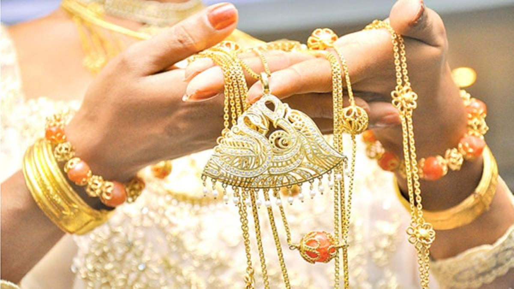

Traditional Arts and Crafts
Traditional arts and crafts form an integral part of Sri Lanka's cultural heritage, representing the creativity, skill, and craftsmanship of its people. Passed down through generations, these crafts showcase the rich traditions and unique aesthetics of the island. Sri Lankan artisans employ age-old techniques, utilizing natural materials and intricate designs to create masterpieces that reflect the essence of the country's cultural identity. Exploring the realm of traditional arts and crafts allows you to appreciate the dedication, precision, and artistic vision that go into preserving these timeless traditions.
.jpg)
.jpg)
Step into the world of traditional arts and crafts in Sri Lanka, where craftsmanship meets artistic expression. Here are some of the remarkable traditional crafts you can discover.
Handwoven Textiles
.jpg)
Sri Lanka's handloom industry is celebrated for its production of exquisite textiles. Skilled weavers create a variety of textiles, including:
Saris:
Saris are traditional garments worn by women in Sri Lanka. They are typically made from handwoven fabric featuring intricate designs and vibrant colors. The weaving techniques vary across regions, resulting in unique patterns and styles.
Batik Fabrics:
Batik is a traditional dyeing technique where hot wax is applied to fabric in specific patterns before dyeing. The wax acts as a resist, creating beautiful designs with contrasting colors. Sri Lankan batik fabrics are renowned for their intricate motifs and vibrant hues.
Lacework:
Sri Lankan lacework is characterized by delicate designs created using fine threads. Artisans skillfully craft lacework using techniques like crochet and tatting, resulting in intricate patterns. Lacework is used in clothing, tablecloths, curtains, and other decorative items.
Woodcarvings
.jpg)
Sri Lankan woodcarving is a revered traditional craft that showcases the mastery of artisans. Some prominent woodcarving traditions include:
Temple Doors:
Sri Lankan temples feature elaborately carved doors that depict religious stories, mythological scenes, and traditional motifs. The intricate carvings reflect the cultural and architectural heritage of the island.
Masks:
Sri Lankan masks hold cultural and ritualistic significance. Artisans carve masks from wood, each representing a specific character from traditional dances, folklore, or mythology. The masks are intricately designed and painted in vibrant colors.
Figurines and Sculptures:
Woodcarvers also create figurines and sculptures portraying deities, mythological creatures, and scenes from everyday life. These sculptures are often used for religious purposes, home decor, or as collectible art pieces.
Pottery
.jpg)
Sri Lankan pottery is renowned for its unique forms, intricate decorations, and rustic aesthetics. Traditional pottery includes:
Clay Pots:
Sri Lankan potters craft functional clay pots using traditional hand-building techniques. These pots are used for cooking, storage, and serving purposes. The firing process in wood-fired kilns imparts a distinct earthy color and texture to the pots.
Decorative Ceramics:
Artisans also create decorative ceramics such as vases, bowls, and plates. They employ techniques like wheel-throwing and hand-building to shape the clay. The ceramics are adorned with intricate designs, traditional motifs, and sometimes glazed to enhance their beauty..
Traditional Jewelry
Sri Lanka's traditional jewelry represents the country's rich cultural heritage and is crafted with meticulous attention to detail. Some noteworthy jewelry styles include:
Kandyan Jewelry:
Kandyan jewelry is associated with the Kandyan dance tradition and features intricate designs in gold. The jewelry often incorporates gemstones such as sapphires, rubies, and pearls. Traditional Kandyan jewelry includes necklaces, earrings, bracelets, and headpieces.
Bridal Jewelry:
Sri Lankan bridal jewelry is ornate and includes a range of pieces like necklaces, earrings, bangles, and hair ornaments. Gold is the primary metal used, and the jewelry is often adorned with gemstones, showcasing exquisite craftsmanship.
Village Jewelry:
Rural areas of Sri Lanka have their distinctive styles of jewelry crafted from materials like silver and beads. These pieces are known for their traditional designs and are worn as everyday accessories by local communities.